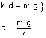
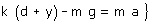
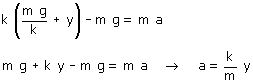
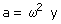
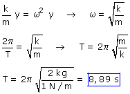

Consideramos el bloque en la posición de equilibrio
|
En la posición de equilibrio el bloque está sometido al peso que tira hacia abajo y a la fuerza elástica que tira hacia arriba. Ambas fuerzas se compensan  Siendo k = 1 N/m |

Llevamos el bloque a una distancia y de la posición de equilibrio y soltamos...
|
La fuerza elástica es mayor que el peso (El muelle está más estirado que en la posición de equilibrio): la fuerza util va hacia arriba y por tanto la aceleración va hacia arriba  Sustituyendo el valor de d obtenido en la situación de equilibrio:  |

El sentido de la aceleración es contrario a la elongación (Separación de la posición de equilibrio) y su módulo es proporcional a esta. Estas dos características son típicas del movimiento armónico
En Cinemática el módulo de la aceleración de un movimiento armónico vale:

(Se ha suprimido el signo menos porque se trata de un módulo)
Evidentemente el módulo de la aceleración calculada en Dinámica tiene que ser igual al módulo de la aceleración calculada en Cinemática:
